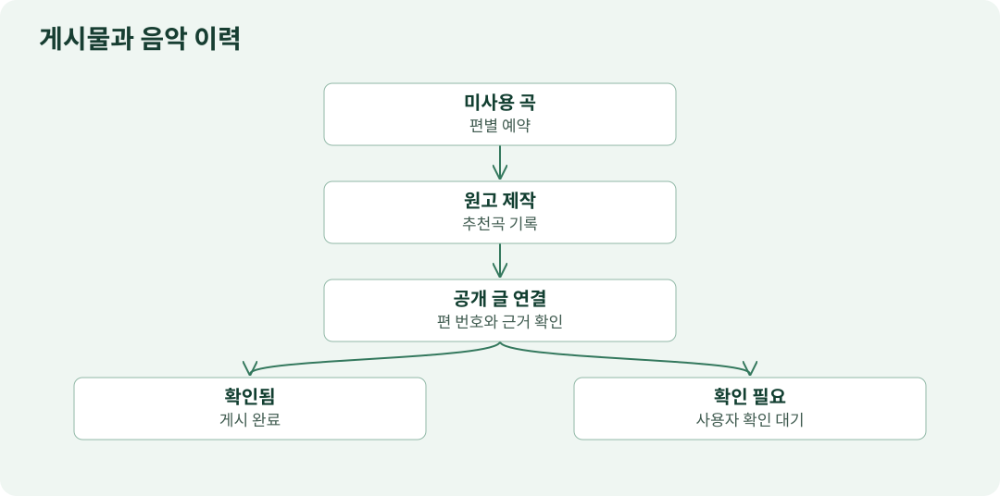

BLOG LAB STUDIO · 개발 진행 중02. 기능 명세
입력에서 게시 이력까지
질문지는 카테고리별 Excel 구조를 읽어 필수 항목과 반복 일정 행을 표시한다. PC 파일 선택은 원본 경로를 기록하고, 드롭으로 받은 파일은 작업별 임시 사본으로 관리한다.
원고에는 편 번호와 사진 파일명을 연결한다. 결과 가져오기는 요청 편수, 원고·썸네일 등 필수 파일과 형식을 확인해 누락된 편을 부분 완료로 남긴다. 게시용 텍스트로 바꿀 때 파일명과 링크 속 밑줄은 보존한다.
공개 글을 연결한 뒤 게시 일자와 편 번호를 관리한다. 원고에 추천한 곡은 게시물에서 확인하거나 사용자가 확인한 뒤 게시 완료로 기록한다. 확인할 수 없는 곡은 ‘곡 확인 필요’에 남긴다.

게시물과 음악 이력